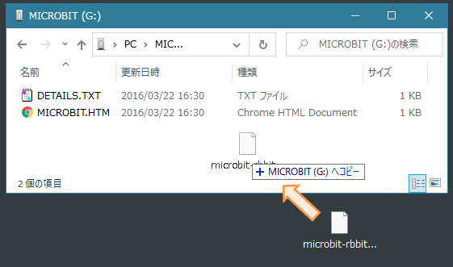
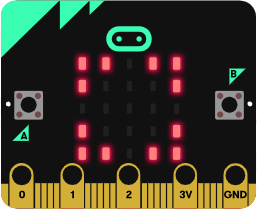
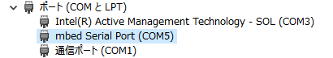
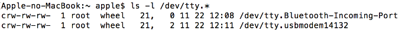
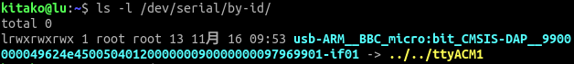
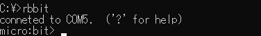
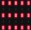
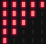
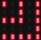

プログラミングをおこなうためのツールです。
Rubyのクラスライブラリとしての機能と WebSocketサーバの機能とをもっており、
Rubyのコンソールプログラムから micro:bitをコントロールしたり、
ブラウザ上で micro:bitと連携したプログラムを作成したりすることができます。
1. 準備作業 (How to setup)
(1)Rubyのインストール
rb:-:bitは Rubyの gemとして作られているので、まず Rubyのインストールが必要になります。
ここではその手順の詳細は省きますが、Windows環境で Ruby Installerを使用する場合は
「Devkit」付きのものを選択してインストールしてください。
(2)gem(rbbit)のインストール
コンソール(ターミナル)から gemコマンドを実行して rbbitをインストールしてください。
OSによって下記のように必要なコマンドが異なりますので注意してください。
- Windows
「--platform ruby」オプションを付けてインストールしなおします。
> gem install rbbit
> gem uninstall eventmachine
> gem install eventmachine --platform ruby- macOS および Linux
$ sudo gem install rbbit(3)micro:bitへのプログラム転送(書き込み)
PCの適当なフォルダーに保存してください。
※「よくある質問」の「micro:bitのバージョン(v1.5 と v2.0)の見分け方を教えてください」を参照して、
micro:bitのバージョンに応じた適切なファイルをダウンロードしてください。
2) PCと micro:bitを USBケーブルで接続して、

PCにダウンロードした上記のファイルをドラッグ＆ドロップなどの操作で
micro:bitに転送(書き込み)してください。

3) 正しく転送(書き込み)がおこなわれると、
micro:bit内でプログラムが起動して下記のようなパターンで LEDが点灯します。

(4)シリアルポート(デバイス)の確認
OSに応じて下記のコマンドなどを実行して、
micro:bitが接続されているシリアルポート(デバイス)を確認してください。
- Windows 
(1)[Windows]＋[x]キーを押し、メニューから「デバイスマネージャー」を選んでください。
(2)デバイスマネージャーに表示された一覧の中から「ポート(COMとLPT)」をクリックし、
その中から「mbed Serial Port」と記載されているもののポート番号を確認してください。
(上記の状態の場合、「COM5」が micro:bitのポート番号になります)
- macOS 
(1)ターミナルから
ls -l /dev/tty.*を実行してください。その中から「usbmodem」というワードを含むデバイスを確認してください。
(上記の状態の場合、「/dev/tty.usbmodem14132」が micro:bitのデバイス名になります)
- Linux 
(1)ターミナルから
ls -l /dev/serial/by-idを実行してください。(2)出力された一覧の中から「BBC_micro:bit」というワードを含むデバイスを確認してください。
(上記の状態の場合、「/dev/ttyACM1」が micro:bitのデバイス名になります)
(5)環境変数の設定
コンソール(ターミナル)を開き、上記(4)で確認したシリアルポート(デバイス)を
環境変数「MB_PORT」に設定してください。
※プログラム実行のつどシリアルポート(デバイス)を指定する方法もありますが、
ここでは環境変数にシリアルポート(デバイス)を設定する方法を紹介します。
- Windows (シリアルポートが COM5の場合の設定例)
> set MB_PORT=COM5- macOS (シリアルデバイスが /dev/tty.usbmodem14132の場合の設定例)
$ export MB_PORT=/dev/tty.usbmodem14132- Linux (シリアルデバイスが /dev/ttyACM1の場合の設定例)
$ export MB_PORT=/dev/ttyACM1$ sudo chmod 666 /dev/ttyACM12. 簡易対話モードによる動作確認 (as Simple Interactive Mode)
(1)rbbitコマンドの実行
上述の準備作業(1)～(5)までができたら、環境変数を設定したコンソール(ターミナル)上でrbbitコマンドを実行してください。
下記のようにmicro:bit> というプロンプトが表示されます。
(もしエラーなどが発生した場合は、準備作業(1)～(5)の内容を再確認してください)

(2)プロンプトからの micro:bit操作
micro:bit> のプロンプトが表示されたら、
下記の一覧に記載されている簡易コマンドで micro:bitを操作することができます。
(exitで rbbitコマンドを終了)
| コマンド | 内容 | ||||||||||||||
|---|---|---|---|---|---|---|---|---|---|---|---|---|---|---|---|
| on [x y] | LEDを点灯 (x, yは LEDの位置; x, yともに 0～4の範囲で指定、省略可) on ... すべての LEDを点灯on 2 2 ... 中心の LEDを点灯 |
||||||||||||||
| off [x y] | LEDを消灯 (x, yは LEDの位置; x, yともに 0～4の範囲で指定、省略可) off ... すべての LEDを消灯off 2 2 ... 中心の LEDを消灯 |
||||||||||||||
| turn [x y] | LEDの点灯状態を反転 (x, yは LEDの位置; x, yともに 0～4の範囲で指定、省略可) turn ... 中心の LEDが点灯していたら消灯、消灯していたら点灯turn 0 0 ... 左上の LEDが点灯していたら消灯、消灯していたら点灯 |
||||||||||||||
| puts [str] | 指定した文字列を表示puts ... 「Ruby!」という文字列を表示(str省略時)puts Hello ... 「Hello」という文字列を表示 |
||||||||||||||
| 1 | LEDパターン１を表示1 ...  |
||||||||||||||
| 2 | LEDパターン２を表示2 ...  |
||||||||||||||
| 3 | LEDパターン３を表示3 ...  |
||||||||||||||
| play | 音を出力(スピーカーの装着が必要)play ... 「ドレミファソラシド」の音階を鳴らす |
||||||||||||||
| scan | micro:bitのセンサー値を表示(約10秒間)scan ... 下記の値を約10秒間表示
|
||||||||||||||
| button | micro:bitのボタン押下状態を表示(約10秒間)button ... ボタン押下状態に応じて下記を表示(約10秒間で終了)
|
||||||||||||||
| port | ポート(デバイス)を表示port ... micro:bitが接続されているポート(デバイス)を表示(COM5, /dev/tty.usbmodem14132, /dev/ttyACM1 など) |
||||||||||||||
| reset | リセットreset ... micro:bitをリセット |
||||||||||||||
| exit | 終了exit ... rbbitコマンドを終了 |
3. WebSocketサーバ (as WebSocket Server)
簡易対話モードによる動作確認ができたら、
WebSocketサーバを使ったサンプルを試してみてください。
→ サンプルプログラム(WebSocketサーバ)
また、WebSocketサーバに関する詳細については
下記のページを参照してください。
→ リファレンス(WebSocketサーバ)
4. Rubyクラスライブラリ (as Ruby Class Library)
簡易対話モードによる動作確認ができたら、
Rubyクラスライブラリを使ったサンプルを試してみてください。
→ サンプルプログラム(Rubyクラスライブラリ)
また、Rubyクラスライブラリに関する詳細については
下記のページを参照してください。
→ リファレンス(Rubyクラスライブラリ)